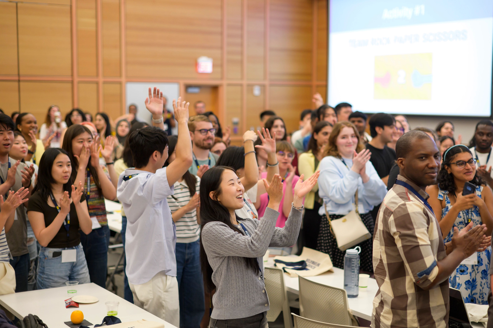

Fieldwork and research
Use human-centered tools to observe contexts, interview people, and turn notes into insights before you jump to a solution.

University of Michigan
Engaged Learning Office
Navigate the active project with care and clarity.
Master adaptive project management, human-centered fieldwork, and constructive feedback as you execute the work in real time.
Field resources
The middle of an engaged learning project is where real growth happens—and where real challenges surface. Requirements shift, team dynamics evolve, clients face unexpected internal constraints, and research data yields surprising results.
The value of this phase is resilience, adaptability, and ethical agility. Learning to manage scope creep, navigate mid-project feedback, and re-align technical decisions with human needs is exactly the kind of experience that distinguishes UMSI graduates.
Treat friction as part of the work, not as a sign that the project is failing. Name the change, check it against your original scope, and decide with your partner—not around them.
Use human-centered tools to observe contexts, interview people, and turn notes into insights before you jump to a solution.
Keep partners informed with a regular, honest status: what shipped, what is blocked, and what decision you need from them.
Gather, evaluate, and integrate feedback from teammates, instructors, and partners at planned checkpoints.
Revisit consent, data handling, and who benefits from the work whenever the method or audience changes.
Write down what changed: a new request, a lost contact, a technical blocker, or a team conflict.
Compare the change with your kickoff brief. Is this a small adjustment or a new project?
Bring options and tradeoffs to the partner. Do not silently absorb work your team cannot finish well.
Update the shared worksheet, owners, and dates. Send a short confirmation so everyone has the same story.
Use these tools to observe, synthesize, communicate, and stay aligned. Several HFLI worksheets are distributed through your course or ELO; request a copy if you do not have one yet.
Observation
Categorize field notes by Activities, Environments, Interactions, Objects, and Users. Request from ELO or your instructor.
Research
Translate interviews and observations into needs and design insights you can act on.
Feedback
Structure midpoint feedback among students, instructors, and partners so comments turn into tasks.
Ethics
Practical scenarios for ethical dilemmas and how teams can respond with community partners.
Tracking
A high-level status view so external clients can see project health without reading every task list.
Comms
Set meeting cadences, channels, and response windows so nobody is guessing how to reach the team.
Planning
Break goals into milestones and assignments. Revisit it every week while the project is active.
Library
Get help with source evaluation, data visualization, citation tools, and sharing your work.
Questions while you are in the field? Email umsi.engagement@umich.edu or call (734) 936-8735.